Design leader · San Jose, CA
Creating safe spaces is good for business. Taking on well-defined problems with creative confidence drives great customer outcomes.
With twenty years as a leader, my teams and I have designed B2B, SaaS, and AI-native products and platforms across diverse enterprise landscapes. Inspired by research, guided by systems thinking, driven by high-standards, supercharged by AI. Always coming back to collaboration as the key that unlocks innovation.
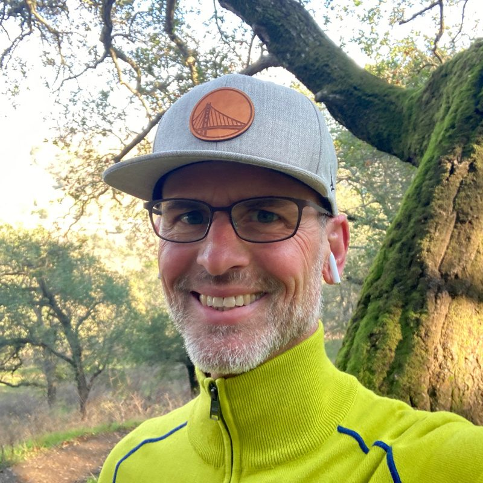
My Mantra: Lead by listening. Create a shared purpose and teams will be motivated to deliver.
Great design is a given. Facilitation, critical thinking, and coaching are what make it happen. Design with a capital D.
Systems thinking and storytelling tame the complexities of the product experiences we craft for our customers.
Wolf by THE numbers
Fashion transformation. An AI and generative-AI toolset that compressed the product-development cycle from 47 weeks to 12, giving fashion designers agency with AI, and Walmart a competitive edge providing fashion for the whole family.
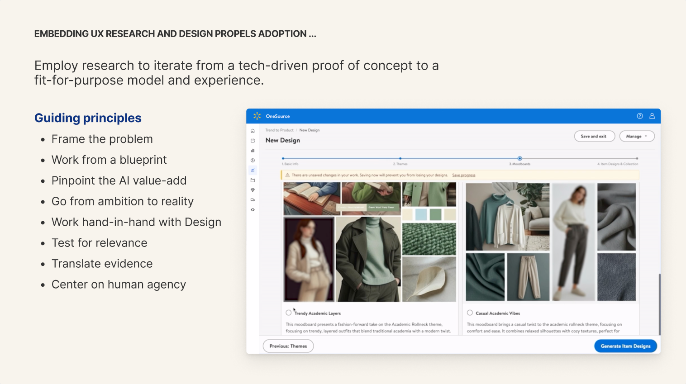
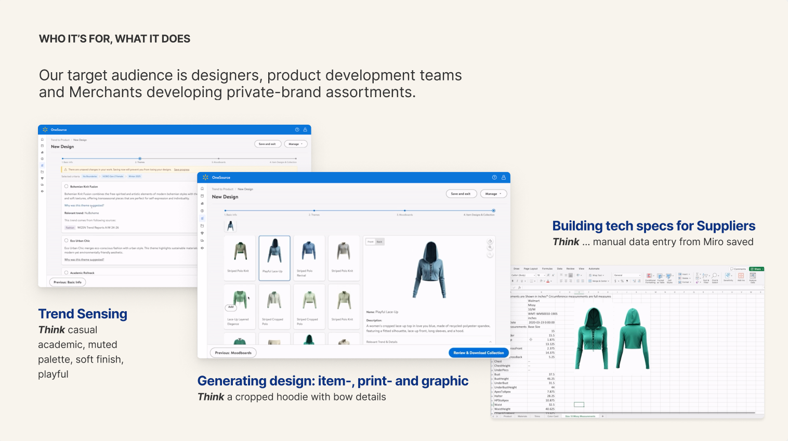
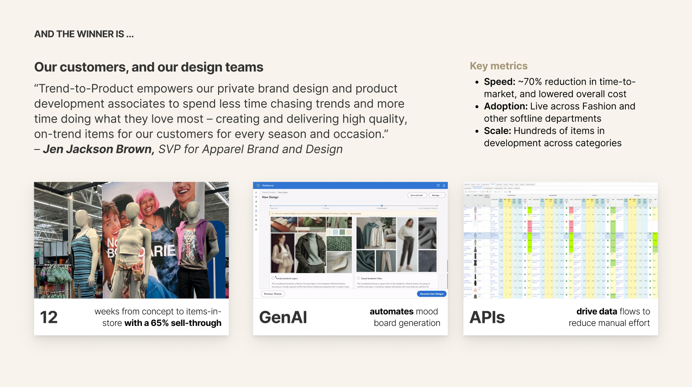
Walmart published a piece on Trend-to-Product in April 2025. Read the announcement →
THE MANY WAYS OF WORKING WITH AI
From AI-powered experiences like Trend-to-Product, to design sprints that accelerate synthesis of input from stakeholders, then generate MVP prototypes for engineering to build, I've put AI into the loop of how my teams craft the next generation of enterprise software tools.
Think of AI as a tool for accelerating the time-tested art of collaboration. In a succession of design sprints with cross-functional partners ranging from merchants and sourcing managers to data analytics and supplier development, I led my team to trim the classic 5-day sprint cycle to a day-and-a-half. Result: User-tested, dev-ready prototypes for tech to build and release.
Leadership principle: To each her own. Replit, Lovable, v0, Cursor, Builder, Figma, ChatGPT, Gemini, Claude, Github. Sometimes you can lead a team by example. Sometimes you empower them and step aside. Scaling as a leader means that it's your mandate to ensure your team adapts and builds the skills to deliver in the midst of a paradigm shift in design practice.
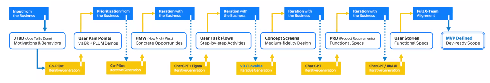
Selected work
Product design crafted in collaboration with customers and end users. Service design blueprints that connected workflows across multiple platform capabilities to enable automation. All enabled by building deep relationships to align product, engineering, data science, marketing and field representatives on delivering shared outcomes.
Head of SD-WAN UX · 2020–2021
Working closely with field sales and customers, redesigned the SD-WAN experience lifecycle around user intent, enabling IT generalists to deploy SD-WAN to thousands of devices with an intuitive setup flow.
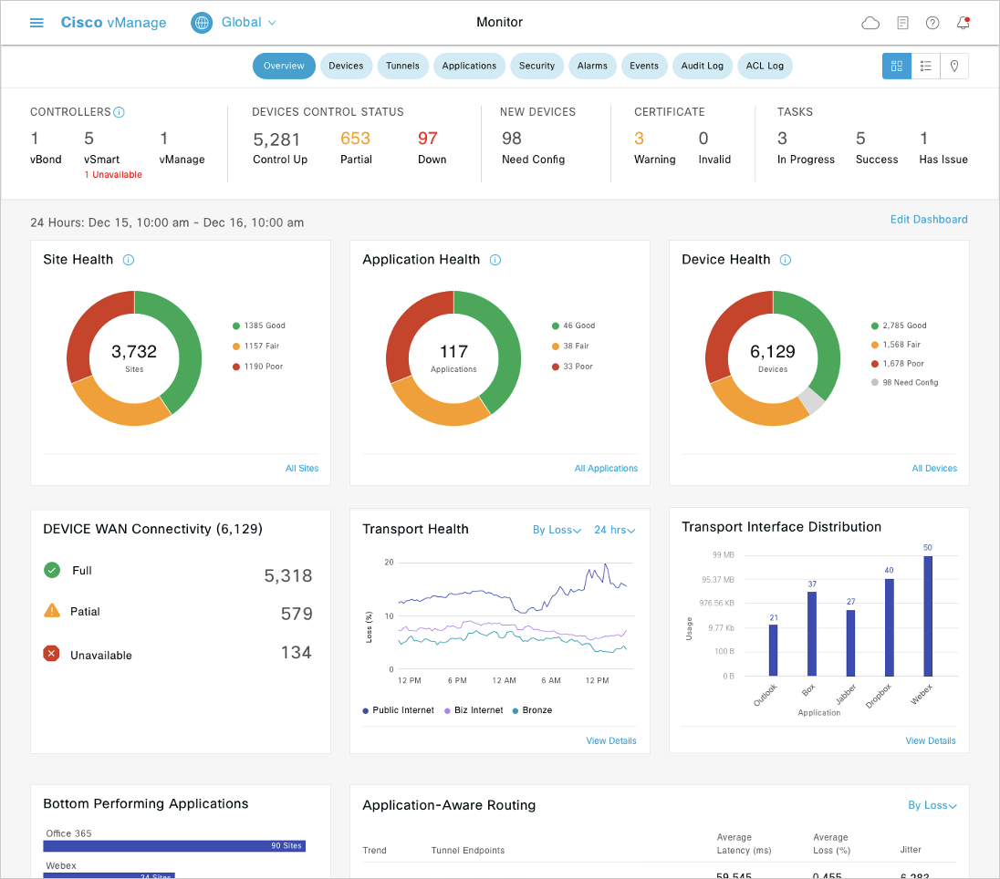
Director of Experience Design · 2016–2020
Introduced a user-first design process into an engineering-first culture. Moved on-prem data virtualization toolset to the cloud. Co-designing with users was the adoption lever that cut front-end UX bugs by 90%.
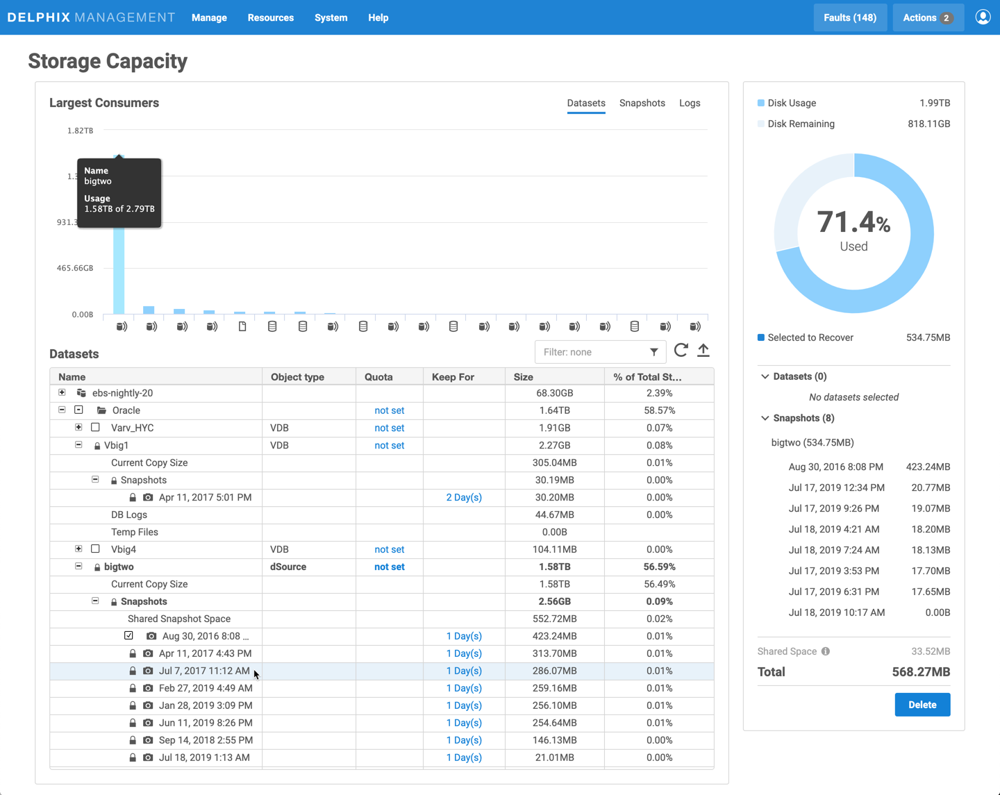
Director of UX and Learning Experience · 2014–2016
Running text analytics on user posts and doing time-sequence analysis by user segment demonstrated where users hit trouble at scale in the iterative design process and pointed the way to in-product learning and usability improvements that drove 25% adoption gains.
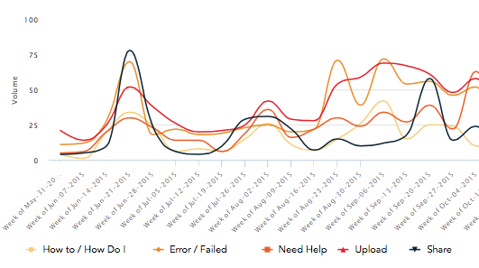
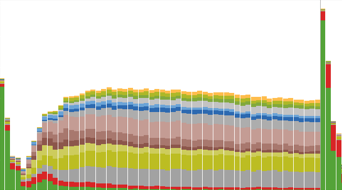
Director of Experience Design · 2012–2014
Built the UX function from scratch to productize a suite of chip-level analysis and security tools, from testing registers on new silicon wafers to crafting an intuitive UI for differential power analysis to installing chip-level cryptographic keys during fabrication. Presented this UX mission to the board of directors to help secure funding for this newly marketable set tools for electrical engineers.
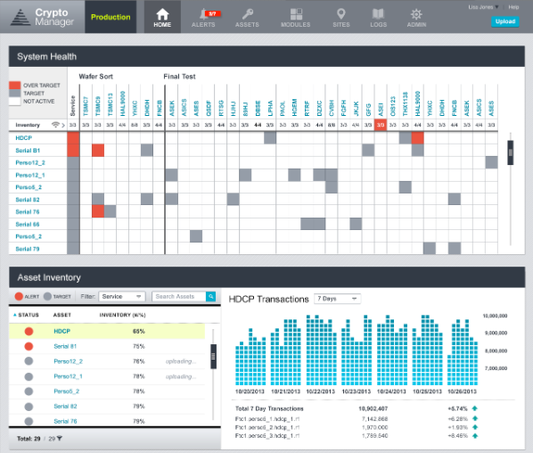
Senior Design Manager, Customer Experience · 2010–2012
Co-founded a customer experience function for the 330M annual visitors to Yahoo! Help. Built their first NLP-powered voice-of-the-customer program. Used comics to communicate behavioral insights that prioritized first-contact resolution to drive strategic change.
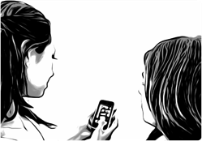
Senior Manager of UX, SMB and Enterprise · 2005–2010
Reshaped how 40M annual visitors found the right products. Persona and behavior-driven design drove traffic increases of up to 235% to the content that Small, Mid-size, and Enterprise customers needed so they could evaluate and install data and security products.
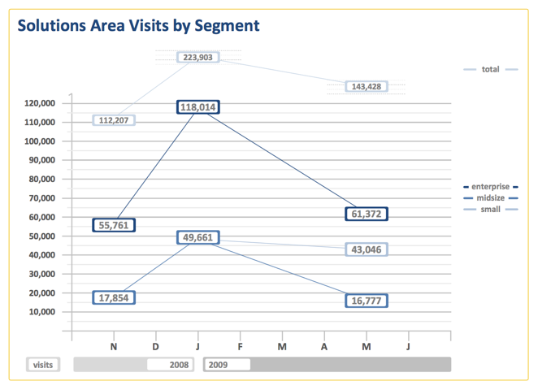
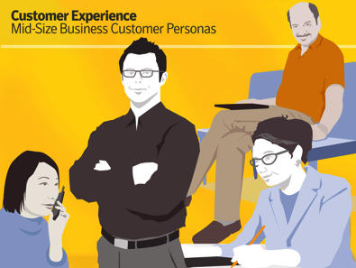